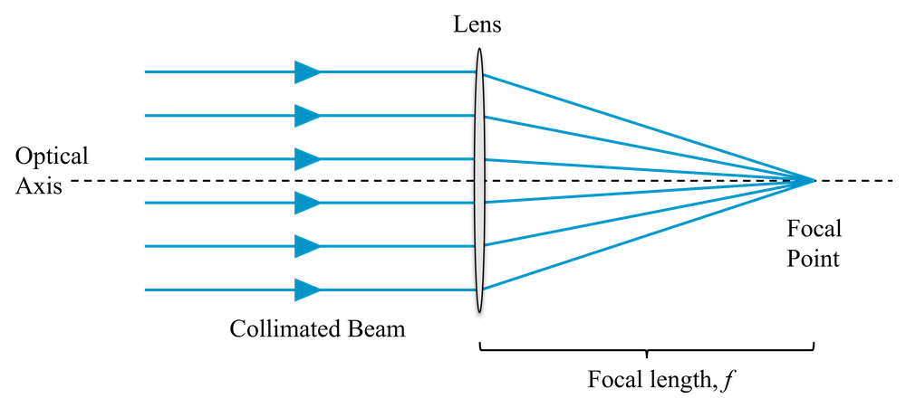
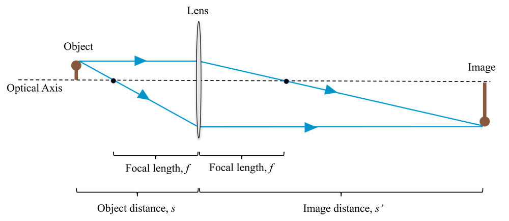
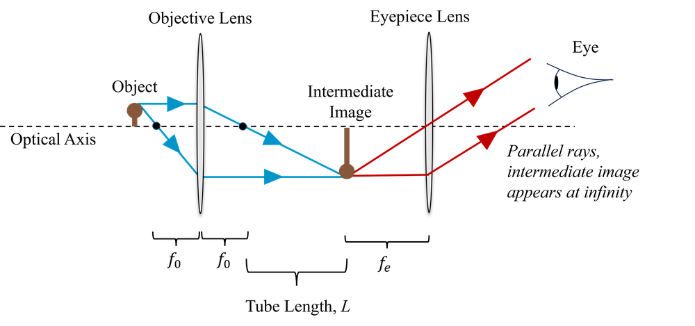
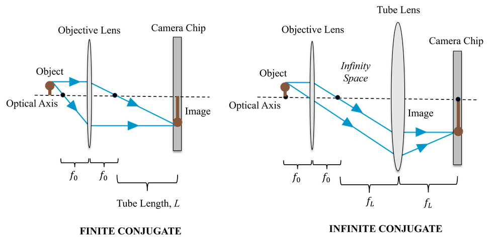
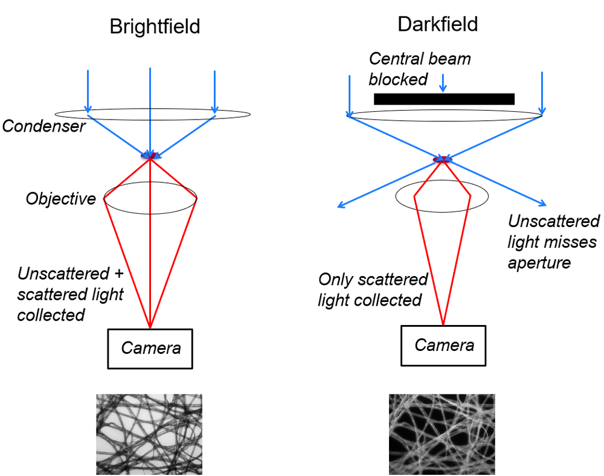

The notes below are a summary of the key points needed for the exam. For more details and background, they should be read in conjunction with reading on Nikon MicroscopyU:
In this section we will review some fundamental concepts from geometrical optics which may be familiar to some but not all, and we begin by thinking about the design of a simple microscope.
A lens is a piece of glass or plastic with one or both of its surfaces curved in such a way as to cause light rays to converge or diverge due to refraction. In particular, it can be used to form images, or to convert a bundle of diverging light rays into a collimated bunch of light rays (i.e. all travelling parallel to each other). In what follows, we use the thin lens approximation, which ignores the thickness of the lens - more accurate modelling of real lenses is best left to optical raytracing software.
If a collimated beam (light rays parallel) passes through a lens, the rays will be brought to focus at the focal distance, \(f\), which depends on the design of the lens, as shown in Fig 1.

We can also use the lens to create an image of an object, as shown in Fig 2. If the object is a distance (\(s\)) from the lens, then we obtain an image a distance (\(s'\)) on the other side of the lens, determined by the focal length of the lens, \(f\), and given by the lens equation:
\[\frac{1}{f} = \frac{1}{s} + \frac{1}{s'}\]
Note that \(s\) and \(s'\) are both measured from the lens outwards (i.e. in a system such as that shown in Fig. [lens_imaging], where the object is to the left of the lens, \(s\) is measured from right to left and \(s'\) is measured from left to right.) An object to the left of the lens has a positive \(s\) and an image to the right of the lens has a positive \(s'\). This is called the Gaussian co-ordinate system.

There are some positions of the object, \(s\), for which \(s'\) is negative. In these cases we don’t obtain a real image at all. Instead this distance is now the apparent location of a virtual image, from which light rays appear to emerge from.
The focal length \(f\) is fixed for a given lens, it depends on the curvature of its surfaces and the refractive index of its material, according to the lensmakers’ equation:
\[\frac{1}{f} =(n-1)\bigg(\frac{1}{r_1}-\frac{1}{r_2} \bigg)\]
where \(r_1\) is the radius of curvature of the first surface of the lens, \(r_2\) is the radius of curvature of the second surface, and \(n\) is the refractive index of the lens material.
The linear magnification \(M\), defined as the ratio of the size of the image to the size of the object, is given by,
\[M = -\frac{s'}{s},\]
where the minus sign tells us that the image is inverted.
We have seen above how a single ideal lens can be used to make a microscope of sorts, we produced a magnified image of an object by placing it a distance \(s\) in front of the lens, producing an image a distance \(s'\) behind the lens, where,
\[1/f = 1/s + 1/s',\]
with a linear magnification, \(M = -s'/s\).
To be able to see this intermediate image, we then look at it with our eye, and our eye lens/cornea acts as another lens to form a final image on our retina. But in a microscope we are typically looking at objects that are only perhaps a few hundred micrometers in size. Even if we arrange our lens to have a 20X magnification, we still have an intermediate image that is only millimetres in size. We can make things appear large (i.e. to fill a large fraction of our field-of-view) by bringing them close to your eyes, but to see such a tiny intermediate image we would need to bring it very close indeed, causing eye strain even for those with young eyes.
This is why, in a traditional compound microscope, we also have an eye-piece. The role of the eye-piece is to allow us to put the intermediate image very close to our eye, but view it as though it were at infinity, with our eye fully relaxed. The first lens, the one that is doing the magnification, we refer to as the objective lens. This is shown in Fig. 3.

For the objective lens, of focal length \(f_o\), the linear magnification is given by \(-s'/s\). However, we may also write this magnification as approximately,
\[M = -\frac{L}{f_o},\]
where \(L\) is the distance between the focal points of the objective and the eye-piece. This is called the tube length. This approximation is valid because we typically want a large magnification, and so \(s' \gg s\). This means that the object is quite close to the focal point, i.e. \(s \approx f_o\), and \(L\gg f_o\) such that \(L \approx s'\).
The magnification of the entire microscope includes the angular magnification of the eyepiece (\(x_{np}/f_e\)), where \(x_{np}\) is near-point distance of the eye (conventionally chosen to be 25 cm) and \(f_e\) is the focal length of the eye-piece lens. (The idea is essentially that the eye-piece allows you to bring the intermediate image closer to the eye by this factor). The total magnification is therefore,
\[M = -\frac{L}{f_o}\frac{x_{np}}{f_e}.\]
So, when you use a microscope, the final magnification is the product of the magnification written on the objective and the magnification written on the eye-piece. Typically, the eyepiece magnification is 10x and the objective magnification ranges from 4x to 100x, giving total magnifications of between 40x and 1000x.
Most modern microscopes do not use eye-pieces at all. Instead we can simply place a camera at the plan of the image formed by the objective. Since camera pixels are small (typically 1-20 microns), there is no difficulty in capturing this image directly (we will explore this more thoroughly when we discuss resolution). This is illustrated on the left side of Fig. 4; the objective is referred to as finite conjugate, because it is forming an image a finite distance from itself (conjugate planes in optics refer to the object and image planes).
Another design for a digital microscope is to make use of both an objective and a tube lens. In this design, the object is placed at the focal length of the objective, and so the objective collimates the rays from the object, and the tube lens focuses them to form an image on the camera. The spacing between the two lenses is the sum of their focal lengths. This is illustrated on the right side of Fig. 4; the objective is referred to as infinite conjugate because (by itself) the image it forms would be infinitely far away since the rays are collimated.
The magnification in this case is given by the ratio of the focal lengths of the two lenses,
\[M = \frac{f_L}{f_o}\]
The main advantage of this two-lens design is that the space between the lenses where the light is collimated (known as ‘infinity’ space) can be used to introduce optical elements without affecting the focus position of the microscope. If we were to try the same thing with the single lens microscope, we would find that the focus position changes due to refraction of light as it passes in to and out of the optical element.

The above theory is only exactly the case for an idealised thin lens. Any real lens has a finite thickness, and the thickness must be sufficient to accommodate the curvature of its surfaces over the required lens diameter. It is therefore very hard to make a lens with a short focus length (large curvature needed) of a reasonable diameter without it being very thick.
Thick lenses cause optical aberrations. Essentially this means that the light rays from a point on the object do not all converge at a single point in the image, instead they are smeared over a larger area, resulting in a blurred image. We will not study these in detail, but you should know that in general it is hard to make a lens with a short focal length able to image over a large field of view without introducing lots of aberrations. But that is exactly what we want to do in microscopy!
Practical objectives are multi-element, i.e. they contain multiple surfaces which are optimised to minimise aberrations. For colour, or multi-wavelength imaging, they must also be achromatic (i.e. different wavelengths are focused to the same point) and flat-field, meaning that the in-focus image is formed on a plane, and not a curved surface. Generally, the more you are willing to pay, the better these correction will be. There is a bizarre (for historical reasons) set of names for the different levels of correction available, which you can read all about here (but do not need to memorise for the exam):
An important distinction is between finite conjugate and infinite conjugate objectives:
Finite Conjugate: An objective designed to form an image directly on the camera. Objectives are designed for the camera to be placed at a specific distance (\(s'\)), usually either 160 mm (DIN standard) or 180 mm (RIS standard). Of course, you can form an image at different distances, providing you also change the distance to the object, \(s\), but the aberration corrections won’t be as good. Objectives are specified in terms of their magnification, such as \(10\times\), or \(40\times\), and you only obtain this magnification with the camera placed at the correct distance. For direct visualisation of the image, an eyepiece is also required. This also has a magnification specified, and the total magnification is given by the product of the two.
Infinite Conjugate: An infinite conjugate microscope objective is designed to be used with the object placed at the focal length, \(f\), and so form an image at infinity (another way of saying they collimate the light rays). They therefore require a second lens, known as tube lens, to form an image on the camera. These objectives are again specified by magnification, but now this depends on using a tube lens of the specified focal length. There is also usually a range of tube lengths (distance between the objective and the tube lens) which are recommended. It might seem that you can get arbitrarily high magnification by using a very long focal length tube lens, and to an extent this is true, but this magnification is not useful - you will see why when we discuss resolution. Some infinite conjugate objectives are designed to work with a specific tube lens; the two are designed together in order to achieve the specified aberration correction.
Advantages of infinite conjugate objectives: Elements with optical thickness (such as filters and beamsplitters) can be placed in the optical path without affecting the magnification. Infinite conjugate objectives are also needed in scanning laser systems such as confocal microscopes (more on this in a later lecture).
The condenser is the element used to illuminate the sample. The condenser has an important role to play in resolution, as discussed later, the theoretical resolution of a transmission microscope cannot be achieved if the numerical aperture does not match the numerical aperture of the objective. In a good quality microscopy, the condenser is usually set up to provide Köhler illumination which provides uniform illumination (i.e. the shape of the bulb filament is not visible) and allows the light intensity to be controlled using an iris, independently of the field (in Lecture 2 we will see that this also provides optimal resolution). In some configurations, illumination light is sent through the objective, in which case the objective and the condenser are one and the same.
To observe features in a sample there must be some difference in intensity or colour between those features and other areas of the image. The contrast depends not only on the sample, but on the design of the microscope and illumination.
Brightfield: Most simple microscopes operate in bright field transmission mode. The sample is illuminated from the back, and we obtain contrast because the sample absorbs or (to a lesser extent) scatters light. Of course the sample must be at least partly transparent, or we simply obtain a silhouette. This type of microscope therefore cannot image thick samples. Samples are often stained in order to selectively increase absorption. A common staining protocol used in histology is H&E (Hematoxylin and Eosin) which stains components of tissue various shades of blue, violet and red.
Darkfield: When absorption cannot provide sufficient contrast, particularly for unstained samples (e.g. live samples), darkfield microscopy may sometimes be used. In this case, the sample is illuminated at a high angle of incidence, such that undeflected light cannot reach the objective. We therefore only see light which is scattered by the sample, and the background is dark.

Fluorescence Microscopy: When certain molecules, called fluorophores, absorb light of certain wavelength, they re-emit light at a longer wavelength. The difference between the excitation and emission wavelengths is called the Stokes shift. Physically, an incident photon excites an electron to a higher energy level. It then relaxes to a slightly lower level via internal energy transfer processes, before re-emitting and dropping back down to the original level. Since the drop is now a smaller change in energy, the emitted photon is lower energy and so has a longer wavelength.
When a sample is naturally fluorescent, we call this intrinsic or autofluorescence. More often, we apply fluorescent stains or genetically engineer an organism to contain fluorescent proteins.
To image fluorescence we introduce a fluorescence filter set. The excitation filter ensures we illuminate the sample only with the correct excitation wavelength, and the emission filter selects only the fluorescent emission. Without the use of filters, the fluorescence emissions would be drowned out by the excitation light hitting the camera.
The direction of the emitted photon is random and doesn’t depend on the direction the excitation came from. So there is no distinction between bright-field and dark-field imaging. Fluorescence microscopy is often performed in epi-illumination configuration, meaning that the sample is excited from the sample side as it is imaged, via the same objective. A dichroic mirror, which reflects light below a certain threshold wavelength and transmits light above this threshold (or vice versa) is then used to separate the excitation and emission optical paths.
Phase Contrast Microscopy: This relies on changes in optical path length (physical path length multiplied by refractive index) of the light rays passing through different parts of the sample, effectively making the microscopy sensitive to variations in refractive index. This helps provide contrast even when the sample does not absorb or scatter much light.
You should be able to:
Use the lens formula to relate the position of the object and image for a lens of a particular focal length.
Describe how a simple compound microscope works, including the role of the eye-piece and objective.
Describe how a simple digital microscope works, using either a finite or infinite conjugate objective.
Calculate magnification for all three types of microscope.
Explain the role of the condenser.
Explain the difference between finite and infinite conjugate objectives and understand what the specified magnification signifies for each.
Explain the role and importance of a tube lens.
Explain the difference between light-field, dark-field and fluorescence as common imaging modes.